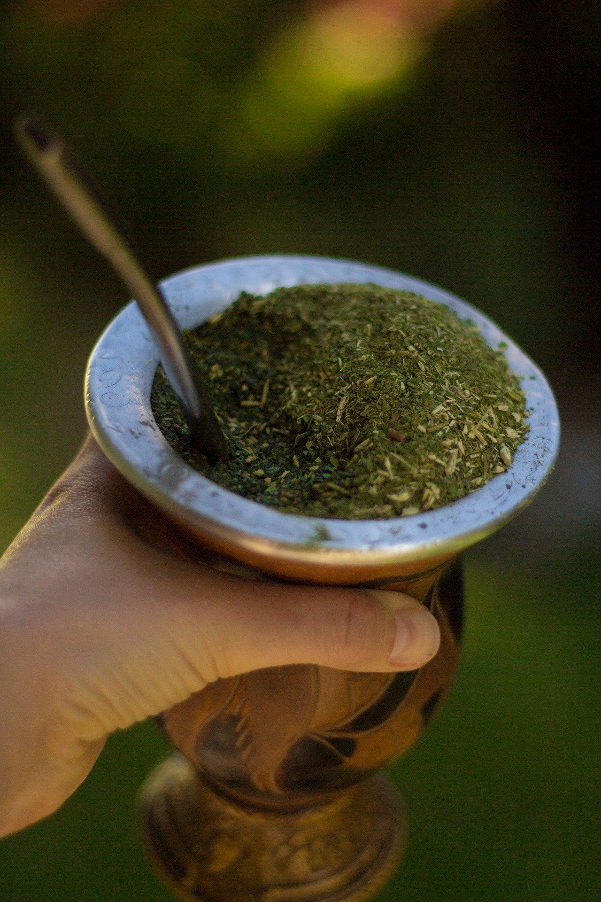
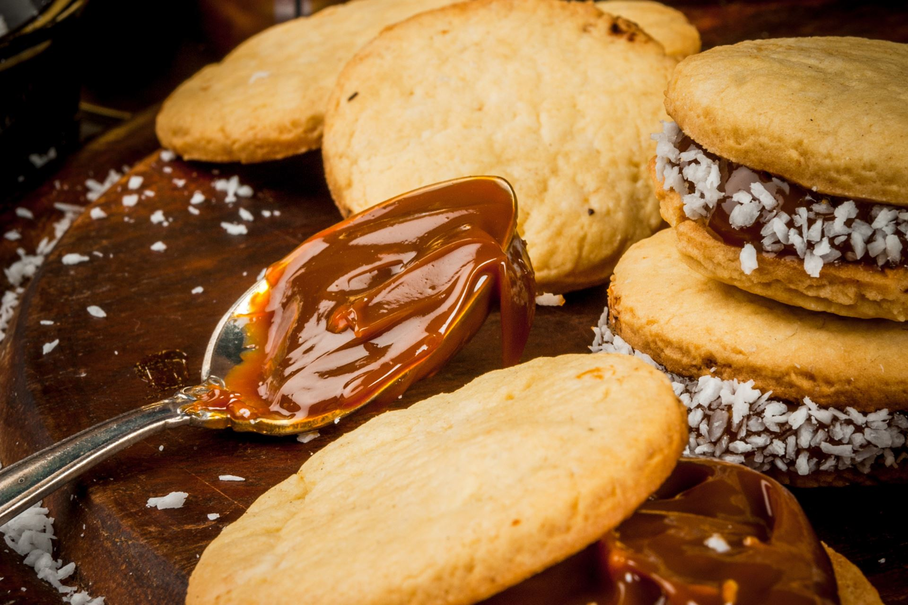
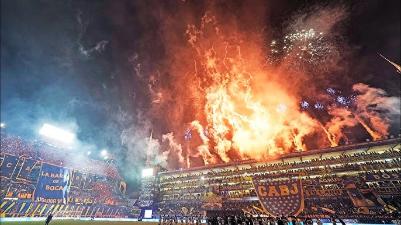
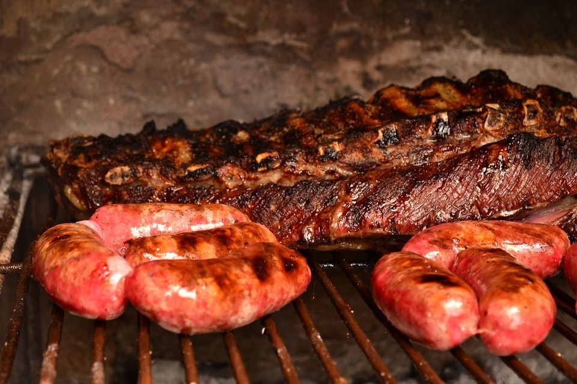
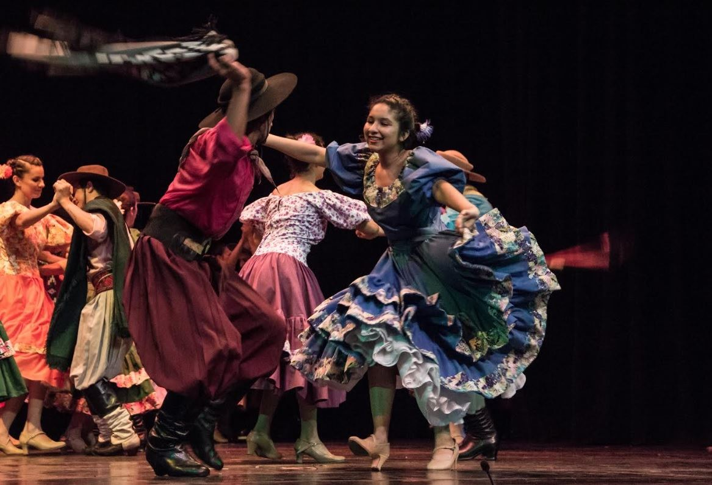

A la hora de visitar un país, es importante conocer su cultura y sabemos que dentro de cada una, hay muchas tradiciones y costumbres. Argentina no es la excepción: País del tango, fútbol, asado y mate.
Conocer este país implica sorprenderse con cada tradición diaria y muchas de ellas, hasta terminas adaptándolas a tu vida sin darte cuenta, por lo maravillosas que son.
A continuación, te contamos cuáles son las más importantes:
Saludar con un beso
A los argentinos y argentinas se los caracteriza por ser amables y afectuosos. No importa si sos amigo o un desconocido, todos van a saludarte de la misma forma. Es bastante común que en Latinoamérica se salude con un beso, pero muchas veces para otras culturas esto es bastante raro y llama la atención, sobre todo al verlo entre hombres. Y si se trata de una persona que no ven hace mucho tiempo, empieza el show de besos, abrazos y palmadas!
¡La argentinidad al palo!: El mate

El mate es la infusión tradicional y favorita de todos los argentinos. Su sabor es amargo pero podes agregarle a gusto cualquier tipo de endulzante, ya sea azúcar, edulcorante o miel. Es el pretexto ideal para generar charlas copadas con quienes tengas cerca.
¿Cuándo se bebe? En cualquier momento del día. Mañana, tarde, noche… En Argentina no existe horario para disfrutar de un buen mate acompañado de facturas, galletitas, bizcochos o tortas fritas. A diferencia del café y té, el mate no se sirve comúnmente en restaurantes. La mayoría de los argentinos tienen su propio set “matero” y lo preparan en sus casas.
Te dejamos un mini tutorial para que armes el tuyo:
- Calentá el agua a 70°. Podes hacerlo en una pava eléctrica (en Argentina ya vienen con la opción “mate”) o poniendo una pava clásica sobre una hornalla de la cocina. Lo clave es que esté caliente pero no se hierva.
- Poné la yerba dentro del mate, llenando un poco más de la mitad. Tapá con tu mano la boca del mate, sacudilo hacia abajo y volvé a darlo vuelta. Esto es más que nada para sacar el polvo de la yerba.
- Mové la yerba de manera que quede más cantidad hacia adelante, dejando lugar a la bombilla.
- Colocá la bombilla en el hueco que dejaste.
- Cargá el agua de la pava en un termo (o podes tomarlo desde la misma pava, pero es más cómoda y segura la segunda opción) y empezá a cebar tus mates.
- Absorbé el agua por la bombilla y disfrutá esta infusión acompañándola con facturas, galletitas, bizcochitos o tortas fritas.
Un infaltable: Dulce de leche
No se hizo ningún censo, pero el dulce de leche es algo que está probablemente en la casa de todos los argentinos y argentinas. Se trata de un dulce tradicional hecho de leche de vaca, azúcar, esencia de vainilla y un poco de bicarbonato de sodio.
A su vez, hay distintos tipos que varían según la contextura:
- Colonial: con una mayor parte de leche que de azúcar, más firme.
- Repostero: el más espeso de todos, utilizado especialmente en la repostería.
- Clásico: el estilo más dulce y a su vez suave, por ser más blando.
- Light: una nueva opción que apareció hace unos años (personalmente creemos que no hay que sentir culpa al comer algo tan rico como el dulce de leche!)
Se puede untar en pan, tostadas, galletitas y amantes de él hasta lo comen a cucharadas mientras se acompaña con mates o un rico café. Además, es la complementación principal de otro de nuestros íconos: el alfajor.

Religión argentina: El fútbol.
Argentina es tierra de grandes futbolistas del pasado y del presente. Di Stéfano, Maradona y Messi lograron en distintas épocas ser los mejores jugadores del mundo. Es que para todos los argentinos, el fútbol es mucho más que un deporte: es una pasión. Muchas emociones se despiertan durante un partido: alegría por ganar, euforia por un gol en el último minuto, bronca por perder y enojo por un penal mal cobrado. El espectáculo imperdible en Argentina es el “superclásico” entre River Plate y Boca Juniors, dos de los equipos más populares del país.
Apenas el árbitro suena el silbato dando inicio al partido, todo se paraliza. “Y no importa donde juegues porque yo voy a cualquier lugar” se canta en la cancha. Es que si, muchos postergan planes y viajan a donde sea necesario para seguir su pasión. ¿Qué otro evento se espera en Argentina? El Mundial de fútbol. Cada 4 años, todas las diferencias quedan de lado y el país entero se une por una razón: traer la copa del mundo a casa.

Dormir siesta
Normalmente es después almorzar, desde el mediodía hasta las 3 o 4 de la tarde. Y sobre todo en el norte argentino, la siesta es un ritual que no se negocia: en ese horario cierran muchos negocios y servicios. Es importante que lo tengas en cuenta durante tu viaje porque cada lugar tiene sus prioridades. En cambio en Buenos Aires no es tan habitual, ya que es conocida como la ciudad que nunca duerme.
¿Se sale?: La previa
Si estás pensando en conocer la noche argentina y salir a bailar con amigos, probablemente siempre un grupo de argentinos te invite a “la previa”. ¿Qué es? Es una reunión entre grupos de amigos que puede organizarse en algún bar o en la casa/departamento de alguien. Básicamente, es el punto de encuentro previo a ir al boliche donde el ambiente es genial: se arman tragos, se escucha música y a veces hasta surgen juegos temáticos.
Además, en algunas previas suelen haber ciertos rituales argentinos como el de beber desde una botella cortada. Es una técnica que comenzó a implementarse entre las personas de clase baja que se trata de cortar una botella de gaseosa por la mitad (puede ser con un cuchillo) para convertirla en un vaso y servir la bebida dentro de ella (casi siempre vino o la mezcla de vino con gaseosa). Este “vaso/botella cortada” suele pasarse de mano en mano entre las personas que estén en la reunión y compartirse.
El asado
Para un argentino, comer un asado no es solo sentarse a degustar carne, también implica la excusa perfecta para reunirse con familia y amigos. Se trata de un gran clásico de la gastronomía argentina y ritual de los domingos. Si estás de paso por Argentina, te pueden invitar a disfrutarlo en una casa. Y si no tenes esa suerte, quedate tranqui que siempre hay restaurantes o parrillas con las mejores variedades.

Musica
Tango: Un baile sensual con contacto visual y género musical que se dio durante mediados del siglo XX, a causa de la inmigración europea y que terminó convirtiéndose en uno de los atractivos de Argentina más importantes a nivel mundial y sobresale en cada rincón de la Ciudad de Buenos Aires.
A lo largo del tiempo, distintos músicos, compositores y letristas fueron haciendo historia.
Algunos de ellos son:
- Astor Piazzolla
- Carlos Gardel
- Tita Merello
- Homero Manzi
Folklore: Es la música que representa a todos los argentinos y que a su vez está dividida en muchos géneros que varían según la región del país. A diferencia del tango, el folklore es mucho más alegre y se da en un ambiente más familiar. Sus danzas son una de las tradiciones gauchescas más mantenidas y estos bailes también dependen de las melodías. Algunos son la , malambo, gato, chamamé, zamba y carnavalito.

Rock Nacional: Un género que nació en Argentina a partir de la influencia del rock and roll en Estados Unidos y del boom que causó The Beatles. El rock nacional en Argentina no solo se trató de componer en español, sino que también se armaron movimientos con distintas expresiones musicales que tuvieron mucha popularidad.
Hay que mencionar que en la historia argentina, este género sufrió una gran censura durante toda la dictadura militar porque la policía lo consideraba revolucionario y por esto, muchos artistas tuvieron que irse del país. Con la vuelta de la democracia, el rock nacional resurgió y volvió con increíbles melodías y letras relacionadas a la libertad de expresión, igualdad social e injusticias.
Si bien hoy son incontables los artistas y bandas argentinas dentro de este género, las figuras que marcaron un antes y un después son, sin dudas, Charly García, Luis Alberto Spinetta y Soda Stereo.